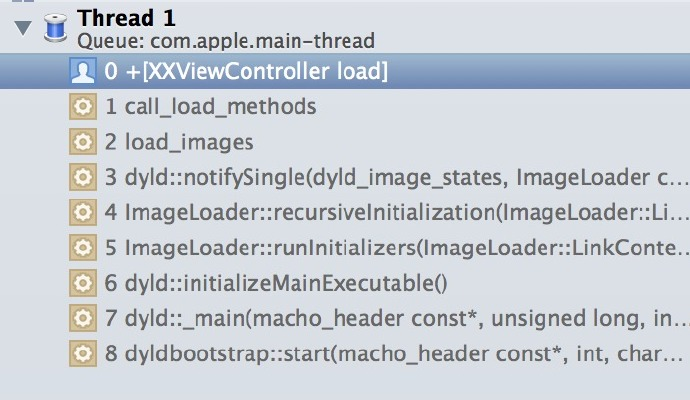

今日头条iOS客户端启动速度优化
t(App总启动时间) = t1(main()之前的加载时间) + t2(main()之后的加载时间)
t1 = 系统dylib(动态链接库)和自身App可执行文件的加载
t2 = main方法执行之后到AppDelegate类中的- (BOOL)Application:(UIApplication *)Application didFinishLaunchingWithOptions:(NSDictionary *)launchOptions方法执行结束前这段时间
main()调用之前的加载过程
App启动后的操作
- 加载可执行文件
- 加载dyld
- dyld加载可执行文件依赖的动态链接库（包括系统的framework、加载Objective-C runtime的libobjc、libSystem）
App以Image为单位进行加载
什么是image
- executable
- dylib、framework
- bundle 资源文件，只能用dlopen加载，不推荐使用
系统使用动态链接有几点好处
- 代码共用
- 易于维护
- 减少可执行文件体积
什么是ImageLoader
ImageLoader把image加载到内存，每一个image对应一个ImageLoader。每一个image包括编译后的符号和代码
加载顺序
- 将动态链接的image递归加载
- 从可执行文件image递归加载所有符号
动态链接库加载的具体流程
- load dylibs image
- 步骤
- 分析所依赖的动态库
- 找到动态库的mach-o文件
- 打开文件
- 验证文件
- 在系统核心注册文件签名
- 对动态库的每一个segment调用mmap()
- 可优化的点
- 减少非系统库的依赖
- 合并非系统库
- 使用静态资源，比如把代码加入主程序
- 步骤
- Rebase image/Bind image
- 介绍
- rebase修复image内部资源指针，要把镜像读入内存，瓶颈在IO
- bind修复外部资源指针，需要查询符号表来指向跨镜像资源，瓶颈在CPU计算
- 可优化的点
- 关键在于减少__DATA段指针的数量
- 减少Objective-C类和selector
- 减少C++虚函数
- 使用swift structs
- 介绍
- Objc setup
- 注册Objective-C类
- 把category的定义插入方法列表
- 保证每一个selector唯一
- initializers
- 之前三个步骤都是在修改__DATA段，从这里开始修改堆栈
- Objective-C的+load()
- C++的构造函数属性函数 形如attribute((constructor))
- 非基本类型的C++静态全局变量的创建
- 
- dyld开始初始化程序的二进制文件
- ImageLoader读取image
- runtime 向 dyld 绑定了回调，image 加载到内存后，dyld 会通知 runtime 进行处理
- runtime 接手后调用 mapimages 做解析和处理，接下来 loadimages 中调用 callloadmethods 方法，遍历所有加载进来的 Class，按继承层级依次调用 Class 的 +load 方法和其 Category 的 +load 方法
main()之前的加载时间如何衡量
edit sheme => DYLD_PRINT_STATISTICS，运行时会得到下面的截图
Total pre-main time: 542.20 milliseconds (100.0%)
dylib loading time: 79.58 milliseconds (14.6%)
rebase/binding time: 399.18 milliseconds (73.6%)
ObjC setup time: 32.12 milliseconds (5.9%)
initializer time: 31.25 milliseconds (5.7%)
slowest intializers :
libSystem.dylib : 7.58 milliseconds (1.3%)
main()函数之前的优化点
- 库：减少不必要的framework
- 库：合理设置framework的optional和required
- 类：合并或者删减一些OC类，工具AppCode
- 变量：删减一些无用的静态变量
- 方法：删减没有被调用到或者已经废弃的方法
- +load：将不必须在+load方法中做的事情延迟到+initialize中
- C++：尽量不要用C++虚函数(创建虚函数表有开销)
main()调用之后的加载时间
main()被调用后，在- (BOOL)Application:(UIApplication *)Application didFinishLaunchingWithOptions:(NSDictionary *)launchOptions中创建首页需要展示的view，在当前runloop的末尾调用CA::Transaction::commit完成渲染
渲染的步骤
- 准备阶段 这里主要是图片的解码
- 布局阶段 首页所有UIView的- (void)layoutSubViews()运行
- 绘制阶段 首页所有UIView的- (void)drawRect:(CGRect)rect运行
main()被调用后可优化的点
- 不使用xib
- NSUserDefaults实际上是在Library文件夹下会生产一个plist文件，如果太大需要拆分
- 每次用NSLog方式打印会隐式的创建一个Calendar，因此需要删减启动时各业务方打的log，或者仅仅针对内测版输出log
- 梳理应用启动时发送的所有网络请求，是否可以统一在异步线程请求